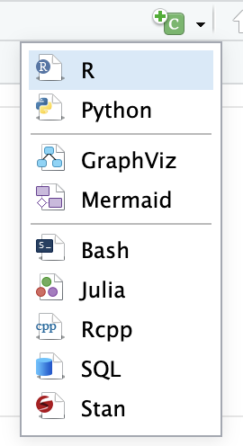

Introducción a R y RStudio
Taller 1 · Sesión 1 · Cuaderno de aprendizaje autónomo
En esta sesión responderás con datos reales a una pregunta concreta: ¿cuántas horas de televisión dicen ver al día las personas encuestadas en la General Social Survey (GSS)? Para llegar a la respuesta aprenderás a localizar una variable, a distinguir las respuestas válidas de los valores ausentes y a decidir con cuántos casos calculas una media.
Empezarás con las respuestas de cinco personas, pocas para que puedas comprobar a mano cada operación. Después aplicarás el mismo razonamiento a la encuesta completa.
Cómo usar este cuaderno. Ten RStudio abierto junto a esta guía. Crearás un proyecto llamado taller_R y, dentro de él, tu propio documento sesion-1.qmd, que escribirás con el editor Visual. En cada apartado añadirás texto y código, lo ejecutarás y compararás tu resultado con el del cuaderno. Intenta resolver cada ejercicio antes de desplegar su solución.
Si un resultado no es el que esperabas, hazte tres preguntas: qué objeto ha usado R, qué operación ha hecho y qué ha devuelto. Te ayudarán a aprender el lenguaje y, más adelante, a revisar cualquier análisis.
Empieza por preparar RStudio Ver las diapositivas de la sesión
En este cuaderno
1. Prepara tu espacio de trabajo
Qué son R, RStudio y Quarto
R es un lenguaje de programación pensado para trabajar con datos, hacer análisis estadísticos y crear gráficos. Un lenguaje de programación tiene reglas para escribir instrucciones que un ordenador pueda interpretar. Cuando escribes 26 + 5, usas una instrucción del lenguaje R. El programa R la interpreta, hace la suma y devuelve 31.
RStudio es un entorno de desarrollo, es decir, una aplicación que reúne herramientas para escribir y ejecutar código, gestionar los archivos de trabajo y consultar los resultados.
Quarto es una herramienta para crear documentos que combinan texto, código y resultados. Tú escribes y guardas el archivo editable, que termina en .qmd. Cuando pulsas Render en RStudio, Quarto pide a R que ejecute los bloques de código y genera un archivo HTML que puedes abrir en el navegador. Editarás el .qmd cada vez que quieras cambiar una explicación o un cálculo.
Instala primero R desde CRAN y después RStudio Desktop. Si RStudio indica que falta Quarto, instálalo desde su web oficial y vuelve a abrir RStudio. También puedes seguir los pasos en un proyecto de RStudio en Posit Cloud.
Conoce los paneles de RStudio
Abre RStudio y compara tu ventana con la captura de la presentación. Los paneles pueden aparecer en otro orden o mostrar otras pestañas. Guíate por los nombres. Si todavía no has abierto un archivo, puede que la consola ocupe toda la columna izquierda. El editor aparecerá al crear sesion-1.qmd.
1. Editor
Es el lugar donde escribes lo que quieres conservar. Cada archivo abierto tiene su propia pestaña. Cuando crees sesion-1.qmd, aquí escribirás tus explicaciones y los bloques de R. Guardar conserva los cambios en el archivo. El triángulo verde de un bloque ejecuta ese bloque. Render genera el HTML a partir de todo el documento.
En esta sesión usaremos la vista Visual. Verás el texto con formato y podrás crear encabezados e insertar bloques de R desde la barra del editor.
2. Consola (Console)
Aquí puedes pedirle a R que haga algo y ver su respuesta de inmediato. Pulsa la pestaña Console. La pestaña vecina, Terminal, sirve para enviar órdenes al sistema operativo. Al final de Console verás >, que indica que R está listo para recibir una instrucción. Escribe solo 26 + 5 y pulsa Enter. Debajo debe aparecer [1] 31.
La consola sirve para probar una idea o leer un mensaje. Si quieres que un cálculo forme parte de tu trabajo y se repita al pulsar Render, escríbelo en un bloque del editor y guarda el documento. En esta sesión usarás la consola para comprobaciones rápidas y para instalar los paquetes.
3. Entorno (Environment)
Este panel te permite ver qué tiene R en memoria durante la sesión. En la captura está abierta la pestaña Tutorial. Pulsa Environment en ese mismo panel. Puede estar vacío al empezar. Vuelve a Console, escribe edad_prueba <- 26 y pulsa Enter. Ahora debe aparecer edad_prueba en Environment con el valor 26.
Acabas de crear un objeto, un valor al que has dado un nombre. Si escribes edad_prueba en la consola, R muestra su contenido. El objeto estará disponible mientras trabajas en esa sesión. El código que lo crea es lo que guardarías en el .qmd si quisieras volver a crearlo al renderizar.
En la pestaña History del mismo panel puedes buscar las instrucciones que ya has ejecutado. Environment te muestra el objeto edad_prueba y History te permite encontrar la instrucción que lo creó.
4. Archivos y otras pestañas de consulta
- Files muestra los archivos y carpetas. Aquí buscarás
taller_R.Rprojysesion-1.qmddespués de crearlos. También usarás esta pestaña para crear la carpetadatos. - Plots muestra los gráficos que produces con R. Es normal que esté vacía al empezar.
- Packages muestra los paquetes instalados. Un paquete es un conjunto de herramientas que añade funciones a R. Más adelante instalarás y cargarás los que necesita el taller.
- Help muestra la documentación. Para probarlo, escribe
?meanen la consola. Se abrirá la ayuda de la función que calcula la media. - Viewer muestra contenido web dentro de RStudio. Según tu configuración, la vista previa del HTML de Quarto puede aparecer aquí o abrirse en otra ventana.
Si buscas el documento donde escribiste el código, mira en Files. Si buscas el valor que R acaba de guardar, mira en Environment. Prueba a pasar de un panel a otro antes de seguir. Guía de los paneles de RStudio.
Crea el proyecto taller_R
- En RStudio, elige File → New Project → New Directory → New Project.
- Escribe
taller_Ren Directory name. En Create project as subdirectory of elige dónde quieres guardar la carpeta y pulsa Create Project. - Comprueba que en la esquina superior derecha de RStudio aparece
taller_Ry que en el panel Files vestaller_R.Rproj. Cuando retomes el trabajo, puedes abrir el proyecto desde ese archivo.
Escribe getwd() en la consola y pulsa Enter. R mostrará la carpeta desde la que busca los archivos. La ruta será distinta en cada ordenador, pero su último componente debe ser taller_R. Si estás en otra carpeta, abre primero el archivo taller_R.Rproj.
Crea y guarda sesion-1.qmd
- Elige File → New File → Quarto Document. Escribe
quartoen Title, selecciona HTML y deja Knitr en Engine. Marca Use visual markdown editor y pulsa Create. - Comprueba que está seleccionado Visual en la barra del editor. Deja el recuadro inicial con el título y el formato que ha creado RStudio. Debajo, sustituye el contenido de ejemplo por un párrafo que diga «En esta sesión voy a explorar una encuesta con R». Si la línea tiene formato de encabezado, abre el selector de estilo de la barra y elige Normal.
- Guarda el documento con el nombre
sesion-1.qmddentro detaller_R, junto ataller_R.Rproj. Comprueba en Files que ves los dos archivos. Esta ubicación permitirá usar las mismas rutas al ejecutar un bloque en RStudio y al generar el HTML.
Escribe y ejecuta el primer bloque
- En el editor Visual, coloca el cursor en una línea nueva debajo de la frase inicial.
- En la barra del editor, abre el desplegable junto al icono verde con una C y un signo +. Selecciona R, la primera opción que aparece en la captura.
- RStudio insertará un bloque vacío donde dejaste el cursor. Haz clic dentro y escribe las dos líneas que aparecen debajo de la captura.

# Suma 5 a la edad de la primera persona encuestada.
26 + 5Salida de R
[1] 31Pulsa el triángulo verde del bloque. La línea que empieza por # es un comentario. Sirve para explicar el código a quien lo lee. R la ignora al hacer el cálculo. El recuadro que aparece debajo del código muestra lo que devuelve R. Compáralo con tu resultado. Las salidas largas se abren al pulsar «Ver salida de R». En tu .qmd, escribe el código y los comentarios dentro del bloque y añade debajo una frase que explique el resultado.
Antes de renderizar, instala los paquetes una sola vez en la consola. Empieza por rmarkdown. Copia la instrucción y pulsa Enter.
# Instala el paquete que Quarto usa para procesar los bloques de R.
install.packages("rmarkdown")Cuando vuelva a aparecer > en la consola, comprueba que la instalación ha terminado sin errores. Después, copia esta instrucción y pulsa Enter.
# Instala las herramientas que usaremos para importar la encuesta.
install.packages("tidyverse")Espera a que vuelva a aparecer > antes de continuar. Los mensajes de progreso pueden variar según el equipo.
Guarda el documento y pulsa Render. Quarto ejecuta los bloques de arriba abajo en una sesión nueva de R. Comprueba que en sesion-1.html aparecen el título, el cálculo, el resultado y tu frase. Cuando vuelvas a renderizar, Quarto actualizará el HTML a partir de lo que hayas guardado en el .qmd. Guía de Quarto para RStudio.
Para cada apartado, escribe el título indicado en una línea nueva. Con el cursor en esa línea, abre el selector de estilo de la barra, que suele mostrar Normal, y elige Header 2 para convertirlo en un encabezado de segundo nivel. Pulsa Enter al final del título para volver a un párrafo normal. Guía del editor Visual.
Para cada ejemplo, inserta un bloque con el botón verde y copia el código con sus comentarios. Ejecuta los bloques en orden, porque unos usarán objetos creados en los anteriores. Escribe tus observaciones entre bloques. Para cada ejercicio, crea tu propio bloque e intenta escribir el código antes de mirar la solución.
2. Guarda valores y haz cálculos
Añade el encabezado «Objetos y cálculos» debajo de lo que ya tienes en sesion-1.qmd. En el primer bloque guardaremos los valores para poder volver a usarlos.
Empecemos por la primera persona del archivo. age es su edad, tvhours son sus horas diarias de televisión y marital es su estado civil. Al ejecutar age <- 26, R guarda el número 26 con el nombre age. A partir de ese momento puedes escribir age cada vez que quieras usar ese valor.
# Guarda las tres respuestas de la primera persona.
age <- 26
tvhours <- 12
marital <- "Never married"
# Calcula la edad dentro de cinco años y muestra el resultado.
age_en_5 <- age + 5
age_en_5
# Comprueba si la persona tiene al menos 18 años ahora.
age >= 18[1] 31
[1] TRUELee age_en_5 <- age + 5 de derecha a izquierda. R busca el valor de age, le suma 5 y guarda el resultado con el nombre age_en_5. Como la asignación utiliza un nombre nuevo, age conserva el valor 26. Si vuelves a asignar un valor al mismo nombre, R lo sustituye. Los nombres distinguen mayúsculas y minúsculas, así que age y Age son dos nombres distintos.
La primera salida aparece al pedir age_en_5. La segunda responde a la pregunta «¿tiene al menos 18 años?». El [1] indica la posición del primer valor impreso en cada línea. El resultado viene a continuación.
Cómo distingue R los números del texto
Las comillas cambian lo que R entiende. 12 es un número que puedes sumar. "12" son dos caracteres. Con as.numeric("12") puedes pedirle a R que interprete esos caracteres como un número. Si quieres comprobar cómo reconoce R un valor, usa class().
| Tipo | Ejemplo | Qué representa |
|---|---|---|
| Numérico | 26 |
Un número con el que puedes operar. |
| Texto | "Never married" |
Una cadena de caracteres, entre comillas. |
| Lógico | TRUE o FALSE |
El resultado de una condición. |
| Entero | 2000L |
Un número especificado como entero en R. |
# Comprueba si la edad y el estado civil son números o texto.
class(age)
class(marital)
# Convierte "12" a número para poder sumarle 1.
as.numeric("12") + 1
# Comprueba si está casada y si tiene entre 18 y 64 años.
marital == "Married"
age >= 18 & age < 65[1] "numeric"
[1] "character"
[1] 13
[1] FALSE
[1] TRUEclass(age) devuelve "numeric" y class(marital) devuelve "character". La suma devuelve 13 una vez hecha la conversión. La comparación con "Married" devuelve FALSE porque la respuesta registrada es "Never married".
<- guarda un valor y == pregunta si dos valores son iguales. En age >= 18 & age < 65, R comprueba cada condición por separado y solo devuelve TRUE si ambas se cumplen. Para pedir que se cumpla al menos una, usa |. Para invertir una condición, usa !. Para comprobar si un valor está entre varios posibles, usa %in%.
Cómo leer una función y sus argumentos
Lee sum(2, 3) como «suma 2 y 3». sum es el nombre de la función y le dice a R qué operación hacer. El 2 y el 3 son los argumentos, es decir, los datos que recibe para hacer la suma. Van entre paréntesis y se separan con comas.
# Suma dos números.
sum(2, 3)
# Añade un tercer número a la suma.
sum(2, 3, 4)[1] 5
[1] 9En la primera llamada, R devuelve 5. En la segunda hace la misma operación con tres argumentos y devuelve 9.
Pruébalo. Guarda en edad_en_10 la edad que tendrá esta persona dentro de diez años. Comprueba si entonces tendrá al menos 40.
Ver solución
# Guarda la edad dentro de diez años y muéstrala.
edad_en_10 <- age + 10
edad_en_10
# Comprueba si entonces tendrá al menos 40 años.
edad_en_10 >= 40[1] 36
[1] FALSELa edad será 36, así que la comparación devuelve FALSE.
3. Trabaja con cinco respuestas
Añade el encabezado «Vectores y valores ausentes» al final de tu .qmd. Conserva los bloques anteriores para que el documento muestre cómo pasaste de una persona a cinco.
Hasta ahora usábamos un valor por variable. Vamos a guardar cinco edades bajo un mismo nombre con c(), que combina valores en el orden en que los escribimos. El resultado es un vector. Repetimos la operación con el estado civil y las horas de televisión. La primera posición de los tres vectores corresponde a la misma persona. Si cambias el orden de un solo vector, pierdes esa correspondencia.
Cada vector de este ejemplo reúne valores de un mismo tipo. Si escribes una edad entre comillas en c(26, "48"), R convierte también el 26 a texto. Conviene comprobar el tipo antes de intentar calcular una media.
# Reúne las respuestas de las cinco personas en el mismo orden.
age <- c(26, 48, 67, 39, 25)
tvhours <- c(12, NA, 2, 4, 1)
marital <- c("Never married", "Divorced", "Widowed",
"Never married", "Divorced")
length(age) # Cuenta cuántas edades hay.
age[2] # Muestra la segunda edad.
age[c(1, 3)] # Muestra la primera y la tercera.[1] 5
[1] 48
[1] 26 67R cuenta las posiciones desde 1. length(age) pregunta cuántos valores hay y devuelve 5. age[2] pide el valor de la segunda posición y devuelve 48. Dentro de los corchetes también puedes dar varias posiciones. En age[c(1, 3)], c(1, 3) construye la selección y los corchetes extraen la primera y la tercera edad.
Seleccionar por una condición
Para averiguar qué personas tienen más de 40 años podrías revisar las edades una a una. R puede hacer la misma comparación con todas de una vez. Antes de ejecutar age > 40, mira las cinco edades e intenta predecir qué posiciones darán TRUE.
# Marca las edades mayores de 40 y extrae las que cumplen la condición.
criterio <- age > 40
criterio
age[criterio]
# Cambia la primera edad en una copia y comprueba el valor original.
age_modificado <- age
age_modificado[1] <- 27
age[1][1] FALSE TRUE TRUE FALSE FALSE
[1] 48 67
[1] 26criterio conserva la longitud y el orden de age. Puedes leerlo en paralelo con las edades.
| Posición | age |
age > 40 |
|---|---|---|
| 1 | 26 | FALSE |
| 2 | 48 | TRUE |
| 3 | 67 | TRUE |
| 4 | 39 | FALSE |
| 5 | 25 | FALSE |
En age[criterio], R conserva los valores de las posiciones 2 y 3. El resultado contiene las edades 48 y 67. La comparación y la selección son dos pasos distintos. En el ejercicio usarás la misma selección para recuperar las horas de televisión de esas personas.
Los corchetes también sirven para cambiar un valor si los usas a la izquierda de <-. En el ejemplo, age_modificado[1] <- 27 sustituye la primera edad de la copia. La última línea devuelve 26 porque consulta el vector original.
Cómo cambia una media si faltan respuestas
En tvhours, la segunda posición contiene NA. Esto indica que no hay un valor registrado para esa persona. Un cero representaría una respuesta conocida de cero horas y entraría en la media. Con is.na() puedes preguntar en qué posiciones falta un dato. R devuelve TRUE en la segunda posición y FALSE en las demás.
# Marca en qué posiciones faltan horas de televisión.
is.na(tvhours)
# Compara qué ocurre al calcular la media con y sin los valores ausentes.
mean(tvhours)
mean(tvhours, na.rm = TRUE)[1] FALSE TRUE FALSE FALSE FALSE
[1] NA
[1] 4.75Con mean(tvhours), la media queda como NA porque uno de sus valores es desconocido. Con na.rm = TRUE, pides a R que use solo las respuestas disponibles para ese cálculo. Puedes comprobarlo a mano. La suma es 12 + 2 + 4 + 1 = 19 y hay cuatro respuestas, así que la media es 19 / 4 = 4,75 horas. El NA sigue en el vector para las consultas posteriores.
Si comparas directamente un dato ausente, e.g. NA > 40, R devuelve NA porque desconoce la respuesta. Para averiguar si un dato falta, usa is.na().
Pruébalo. Selecciona las horas de televisión registradas para las personas de más de 40 años. ¿Por qué hay un NA en el resultado? ¿Cuántas respuestas se usan al calcular la media?
Ver solución
# Selecciona las horas de las mismas personas que tenían más de 40 años.
horas_mayores_40 <- tvhours[criterio]
horas_mayores_40
# Calcula la media de las horas que sí están registradas.
mean(horas_mayores_40, na.rm = TRUE)[1] NA 2
[1] 2La selección devuelve NA y 2. La persona de 48 años no tiene un valor registrado. La media devuelve 2 horas porque solo hay una respuesta válida en ese grupo.
4. Pasa de los vectores a una tabla
Añade el encabezado «Mi primera tabla» y crea un bloque para reunir los tres vectores que acabas de preparar.
Hasta aquí hemos mantenido las variables en objetos separados. Un data frame las reúne en una tabla, de modo que podamos consultar juntas las respuestas de una persona. Cada columna tiene el mismo número de filas. Sus tipos pueden ser distintos. En este caso, age es numérica y marital contiene texto.
# Junta los tres vectores en una tabla y muéstrala.
datos_muestra <- data.frame(age, marital, tvhours)
datos_muestra
# Cuenta primero las filas y luego las columnas.
dim(datos_muestra) age marital tvhours
1 26 Never married 12
2 48 Divorced NA
3 67 Widowed 2
4 39 Never married 4
5 25 Divorced 1
[1] 5 3La tabla tiene cinco filas y tres columnas. Busca la segunda fila. En ella están juntas la edad de 48 años, la respuesta "Divorced" y el NA de las horas de televisión. Si quitáramos ese NA de su columna antes de construir la tabla, las horas de la tercera persona pasarían a la segunda posición y perderíamos la correspondencia. Conservamos el ausente en la tabla y decidimos cómo tratarlo en cada cálculo.
5. Importa y explora la encuesta completa
Añade el encabezado «Importación y exploración de la encuesta». Antes de escribir el código, vamos a darle un sitio al archivo de datos.
Crea las subcarpetas y coloca el CSV
- En el panel Files de RStudio, sitúate en
taller_R, donde vestaller_R.Rprojysesion-1.qmd. - Pulsa New Folder y crea
datos. Repite la operación desdetaller_Rpara crearscripts,tablasyoutputs. Las cuatro deben quedar al mismo nivel.datoscontendrá los datos originales. Las otras tres quedan preparadas para otros archivos de código, tablas y resultados del taller. - Descarga el CSV y muévelo a
datos. En Posit Cloud, entra primero endatosen el panel Files y usa Upload. Comprueba que se llama exactamenteencuesta_social.csv.
taller_R/
├── taller_R.Rproj
├── sesion-1.qmd
├── datos/
│ └── encuesta_social.csv
├── scripts/
├── tablas/
└── outputs/El HTML de tu primera prueba también puede aparecer en taller_R. El árbol muestra los archivos y carpetas que necesitas localizar para continuar.
En un bloque de R de tu .qmd, escribe y ejecuta esta comprobación.
# Comprueba que R encuentra el CSV dentro de la carpeta datos.
file.exists("datos/encuesta_social.csv")[1] TRUELa ruta es relativa. Desde taller_R, indica que R debe entrar en datos y buscar allí el CSV. Si la comprobación devuelve TRUE, pasa a la importación. Si devuelve FALSE, revisa la ubicación del .qmd, el nombre de la carpeta y el nombre del archivo.
Qué ocurre al leer el CSV
Las cinco filas anteriores se escribieron a mano para ver de dónde sale cada valor. El CSV contiene la selección gss_cat de la GSS. El archivo guarda los nombres de las variables en la primera línea y los valores de cada observación en las siguientes. Al importarlo, R interpreta las columnas y reúne las respuestas en una tabla.
Un paquete añade funciones a R. En esta sesión usamos tidyverse, un conjunto que incluye readr, donde está read_csv(). Instalar un paquete lo deja disponible. library(tidyverse) lo carga en la sesión de R que estás usando. Como esta instrucción queda en el .qmd, Quarto también la ejecutará al pulsar Render.
# Carga las herramientas para leer el CSV y guárdalo en una tabla.
library(tidyverse)
datos <- read_csv("datos/encuesta_social.csv")
# Comprueba el tamaño, los nombres de las columnas y las primeras filas.
dim(datos)
names(datos)
head(datos, n = 5)Ver salida de R de la importación
[1] 21483 9
[1] "year" "marital" "age" "race" "rincome" "partyid"
[7] "relig" "denom" "tvhours"
# A tibble: 5 × 9
year marital age race rincome partyid relig denom tvhours
<dbl> <chr> <dbl> <chr> <chr> <chr> <chr> <chr> <dbl>
1 2000 Never married 26 White $8000 to … Ind,ne… Prot… Sout… 12
2 2000 Divorced 48 White $8000 to … Not st… Prot… Bapt… NA
3 2000 Widowed 67 White Not appli… Indepe… Prot… No d… 2
4 2000 Never married 39 White Not appli… Ind,ne… Orth… Not … 4
5 2000 Divorced 25 White Not appli… Not st… None Not … 1En la asignación, read_csv() abre el archivo, lee su contenido y devuelve un tibble, un tipo de data frame. <- guarda esa tabla con el nombre datos. El CSV se usa como entrada y los comandos siguientes consultan el objeto en R.
Qué comprobar antes de calcular
dim(datos) devuelve 21483 9, es decir, 21.483 observaciones y 9 variables. Usa names(datos) para confirmar cómo se escriben los nombres. Después, mira las primeras filas con head(datos, n = 5). Allí reconocerás las cinco edades del ejercicio inicial, ahora acompañadas del resto de variables. Según el ancho de tu consola, R puede abreviar algunos valores o dejar columnas fuera de la vista. También puede mostrar mensajes al cargar los paquetes y al leer el CSV.
# Revisa los tipos de datos y resume las horas de televisión.
str(datos)
summary(datos$tvhours)
# Muestra las cinco últimas filas del archivo.
tail(datos, n = 5)Ver salida de R de la exploración
spc_tbl_ [21,483 × 9] (S3: spec_tbl_df/tbl_df/tbl/data.frame)
$ year : num [1:21483] 2000 2000 2000 2000 2000 2000 2000 2000 2000 2000 ...
$ marital: chr [1:21483] "Never married" "Divorced" "Widowed" "Never married" ...
$ age : num [1:21483] 26 48 67 39 25 25 36 44 44 47 ...
$ race : chr [1:21483] "White" "White" "White" "White" ...
$ rincome: chr [1:21483] "$8000 to 9999" "$8000 to 9999" "Not applicable" "Not applicable" ...
$ partyid: chr [1:21483] "Ind,near rep" "Not str republican" "Independent" "Ind,near rep" ...
$ relig : chr [1:21483] "Protestant" "Protestant" "Protestant" "Orthodox-christian" ...
$ denom : chr [1:21483] "Southern baptist" "Baptist-dk which" "No denomination" "Not applicable" ...
$ tvhours: num [1:21483] 12 NA 2 4 1 NA 3 NA 0 3 ...
- attr(*, "spec")=
.. cols(
.. year = col_double(),
.. marital = col_character(),
.. age = col_double(),
.. race = col_character(),
.. rincome = col_character(),
.. partyid = col_character(),
.. relig = col_character(),
.. denom = col_character(),
.. tvhours = col_double()
.. )
- attr(*, "problems")=<externalptr>
Min. 1st Qu. Median Mean 3rd Qu. Max. NA's
0.000 1.000 2.000 2.981 4.000 24.000 10146
# A tibble: 5 × 9
year marital age race rincome partyid relig denom tvhours
<dbl> <chr> <dbl> <chr> <chr> <chr> <chr> <chr> <dbl>
1 2014 Widowed 89 White Not appli… Not st… Prot… Unit… 3
2 2014 Divorced 56 White $25000 or… Indepe… None Not … 4
3 2014 Never married 24 White $10000 - … Ind,ne… None Not … 4
4 2014 Never married 27 White $25000 or… Not st… Cath… Not … NA
5 2014 Widowed 71 White $20000 - … Ind,ne… Prot… Other 2str() te ayuda a comprobar los tipos. Busca tvhours y confirma que se leyó como una columna numérica. summary(datos$tvhours) resume esa columna e indica cuántos datos faltan. tail(datos, n = 5) permite inspeccionar el extremo final del archivo. Si esperaras una columna numérica y apareciera como texto, ese sería un motivo para revisar cómo se importó antes de calcular.
Cuándo pedir una fila, una columna o un valor
| Escribe… | Para obtener… |
|---|---|
datos["age"] |
La columna de edad como tabla. |
datos$age |
Las edades como vector, con el que puedes calcular una media. |
datos[1, 3] |
Un tibble de una celda: primera fila, tercera columna (edad 26). |
datos[3, ] |
La tercera fila completa, con todas las variables de esa persona. |
Piensa primero qué necesitas. Para ver todas las respuestas de la tercera persona, usa datos[3, ]. La posición antes de la coma selecciona la fila y el hueco después de la coma conserva todas las columnas. Si quieres calcular la edad media, necesitas el vector de edades y puedes obtenerlo con datos$age. datos["age"] conserva la estructura de tabla. Contiene la misma información de edad, pero es un objeto de otro tipo.
Pruébalo. Calcula la edad media de quienes tienen una edad registrada. ¿Cuántas edades faltan?
Ver solución
# Calcula la media de las edades registradas.
mean(datos$age, na.rm = TRUE)
# Cuenta las filas en las que falta la edad.
sum(is.na(datos$age))[1] 47.18008
[1] 76La edad media es aproximadamente 47,18 años y faltan 76 edades. is.na(datos$age) da un resultado lógico por fila. Al sumarlos, R trata cada TRUE como 1 y cada FALSE como 0. Por eso la suma cuenta las edades ausentes.
6. Reconoce las categorías con factores
Añade el encabezado «Factores y categorías» y usa un bloque nuevo para convertir la columna marital.
La columna marital se importa como texto. Podemos convertirla en un factor para que R trate sus etiquetas como categorías de una variable. Un factor guarda una respuesta por observación y tiene un listado de categorías posibles, sus niveles. Es útil, e.g. cuando queremos fijar el orden en que aparecen las categorías de un gráfico.
# Convierte las cinco respuestas en un factor.
marital_muestra <- factor(datos_muestra$marital)
length(marital_muestra) # Cuenta las respuestas, incluidas las repetidas.
levels(marital_muestra) # Muestra las categorías del factor.
# Haz la misma conversión con el archivo completo.
datos$marital <- factor(datos$marital)
levels(datos$marital)[1] 5
[1] "Divorced" "Never married" "Widowed"
[1] "Divorced" "Married" "Never married" "No answer"
[5] "Separated" "Widowed"En la tabla pequeña, length() cuenta cinco respuestas y levels() muestra tres niveles. Dos personas aparecen como "Divorced" y otras dos como "Never married". Todas siguen ocupando su fila. En la encuesta completa aparecen seis niveles. Uno es "No answer". El archivo usa esa etiqueta para indicar que la persona no respondió. R la reconoce como un texto registrado, de modo que is.na() solo detectaría los NA y no marcaría esas filas.
Cuándo importa el orden de las categorías
El estado civil es nominal. Que R muestre primero "Divorced" y después "Married" refleja el orden de las etiquetas. Entre esas categorías no hay una jerarquía. El ejemplo de nivel de estudios de las diapositivas sirve para ver el otro caso. En una variable ordinal, el orden de las categorías forma parte de su significado.
# Guarda las respuestas de cinco personas sobre su nivel de estudios.
estudios <- c("Medio", "Bajo", "Alto", "Medio", "Bajo")
# Define el orden de las categorías y compruébalo.
estudios <- factor(estudios,
levels = c("Bajo", "Medio", "Alto"),
ordered = TRUE)
levels(estudios)[1] "Bajo" "Medio" "Alto"Las respuestas siguen empezando por "Medio". Lo que has definido con levels = c("Bajo", "Medio", "Alto") es el orden de las categorías, y ordered = TRUE indica que ese orden tiene significado. Puedes decir que "Alto" está por encima de "Medio", pero esas etiquetas por sí solas no indican a qué distancia está cada nivel.
Comprueba si lo has entendido. Si llega otra persona que responde "Medio", ¿cambia el número de respuestas? ¿Cambia el número de niveles?
Ver respuesta
Habría seis respuestas y seguiría habiendo tres niveles. La nueva respuesta usa una categoría que ya estaba definida.
7. Qué hacer cuando aparece un mensaje
Si un bloque falla, localiza primero la línea que se estaba ejecutando. Si el problema aparece al pulsar Render, RStudio muestra en qué bloque se detuvo. Lee el mensaje buscando una pista concreta, como el nombre de una función, un objeto o un archivo. Corrige una cosa y vuelve a probar ese bloque.
- Error.
object 'Datos' not founddetiene la instrucción. Si el bloque de importación creódatos, escribe ese nombre con minúscula. Si apareceobject 'datos' not foundaun con el nombre correcto, comprueba si ejecutaste el bloque que lo crea. - Advertencia.
NAs introduced by coercionindica que R siguió adelante y produjoNAal intentar una conversión. Si estabas convirtiendo una columna, revisa qué contenía. Una etiqueta como"Never married"debe conservarse como categoría. - Mensaje informativo.
Rows: 21483 Columns: 9indica el tamaño del archivo importado. Puedes contrastarlo condim(datos). - La consola muestra
+al inicio de la línea. R espera que completes la instrucción. Revisa los paréntesis y las comillas. Puedes pulsar Esc y escribir la línea completa de nuevo. - R no encuentra
encuesta_social.csv. Comprueba el proyecto congetwd()y la ruta confile.exists("datos/encuesta_social.csv").
Si el mensaje señala un símbolo inesperado, revisa también las comas entre argumentos y las comillas rectas en los textos. Cuando un bloque funcione por separado y falle al renderizar, comprueba si depende de algo que escribiste en la consola. El documento debe incluir ese paso en un bloque anterior.
8. Comprueba lo que has aprendido
Recupera la pregunta del comienzo. ¿Cuántas personas de la encuesta completa tienen registradas sus horas de televisión y cuál es la media entre ellas? Añade el encabezado «Práctica final» al final de tu .qmd y crea debajo un bloque de R.
- Extrae el vector de horas y distingue las respuestas registradas de los valores ausentes.
- Cuenta cuántas respuestas registradas hay. Calcula la media usando esas respuestas y redondéala a dos decimales.
- Escribe debajo del bloque una frase con la media, su unidad y el número de respuestas con el que la calculaste.
- Guarda el
.qmd, pulsa Render y comprueba ensesion-1.htmlque aparecen los cálculos y tu interpretación.
Si te atascas, recupera lo que hiciste con is.na() y mean() en el vector de cinco personas. Piensa cómo invertir el criterio para marcar las respuestas disponibles.
Ver solución de la práctica final
# Marca y cuenta las respuestas que tienen horas registradas.
horas_registradas <- !is.na(datos$tvhours)
sum(horas_registradas)
# Calcula la media de esas respuestas y redondéala a dos decimales.
round(mean(datos$tvhours, na.rm = TRUE), digits = 2)[1] 11337
[1] 2.98is.na(datos$tvhours) marca los valores ausentes. Al anteponer !, los TRUE pasan a señalar las respuestas registradas. sum() las cuenta y mean(..., na.rm = TRUE) usa ese mismo conjunto de respuestas para calcular la media. Al final, round() recibe la media y el argumento digits = 2 indica que queremos redondearla a dos decimales.
Una forma de redactarlo sería «En el archivo de la GSS, 11.337 personas tienen registradas sus horas diarias de televisión. Entre ellas, la media es de 2,98 horas diarias». Indicar cuántas respuestas entran en la media permite entender a quién se refiere el resultado.
Con esto ya has recorrido el camino desde un CSV hasta un resultado que puedes explicar y reproducir. La siguiente sesión retoma la misma encuesta para seleccionar, filtrar y ordenar observaciones y calcular resúmenes por grupos.
Para conocer el origen del archivo y el significado de sus variables, consulta la documentación de gss_cat. Si quieres repasar la importación y el trabajo con tablas, puedes seguir con R para Ciencia de Datos.
Cuaderno basado en la sesión 1 del taller de Jesús Martín Godoy y Nadia Adelshina.